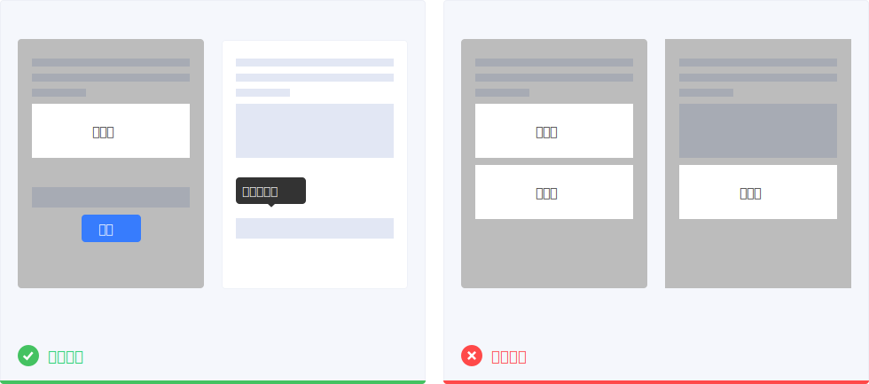
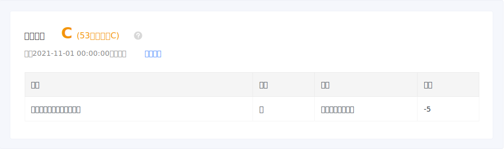
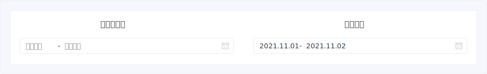

高效
产品应该能助力用户高效地完成目标。提供引导和帮助能使用户快速上手，降低学习成本；对功能和信息进行预先配置，可以降低用户的操作成本，使他们快速开展任务。
引导
对新手用户来说，建立产品内的引导体系可以帮助他们熟悉并尽快开展任务，大部分新手引导会出现在用户首次打开产品时。当系统有新上功能时，适时的引导可以向用户阐明新功能的用途，引导他们去体验。
新手引导
不是所有的界面和功能都需要新手引导，产品的设计应贴合“自然”原则，让用户通过自行探索也可以上手使用。
举例：分步引导需提供跳过的功能，不要阻拦用户快速开展任务
新功能引导
适当增加新上功能的引导可以提高用户对新功能的感知度，但需注意引导形式，不要过度干扰用户正在进行的任务。

帮助
产品在设计时应包含帮助系统，帮助用户理解和认知产品的理念和操作。帮助系统的建立需满足以下原则：
- 易取：用户能够很快、很容易地找到所需内容
- 有效：用户能够通过帮助完成相关任务
- 可理解：所描述的内容能够被理解，文字不要太多，不引入新概念解释旧概念
- 可延伸：用户再遇到类似问题时，可自行解决
帮助系统包含以下四个部分，可根据自身产品属性进行建立：
基于场景的任务帮助
基于场景的帮助需要设计者在任务设计过程中，不断寻找用户可能出现困惑的环节，并预先置入帮助内容。

完整的帮助文档体系
即使系统不使用帮助文档是最好的，但我们也应该提供一份帮助文档。文档应该包含清晰的结构，便于用户进行查找。
社区支持
社区论坛能够促进用户间以及用户和产品人员之间的交流，当用户有bug反馈、体验吐槽、建议、新功能需求时，可以在这里进行表达。
实时支持
产品的客服团队提供即时在线支持，如：400电话、在线客服等，有针对性地解答用户所遇问题。
预先配置
为产品中的操作和信息提供最可能的初始默认值，能帮助用户快速开展任务以及完成填写。

操作配置
避免开始时让用户进行设置。预先将选项配置好，遵循为大多数人设计的原则，并允许少数有特殊需求的人在设置中更改配置。
信息配置
尽可能通过授权获得用户及系统信息，如：位置、日历、通讯录等，并将信息预置在表单中，这将让填写变得高效。